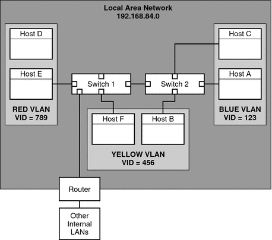
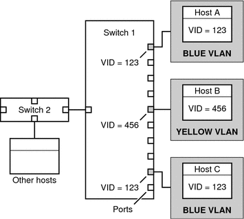

|
|||
|
1. Solaris TCPIP Protocol Suite (Overview) 2. Planning an IPv4 Addressing Scheme (Tasks 3. Planning an IPv6 Addressing Scheme (Overview) 4. Planning an IPv6 Network (Tasks) 5. Configuring TCP/IP Network Services and IPv4 Addressing (Tasks) 6. Administering Network Interfaces (Tasks) Interface Administration (Task Map) Basics for Administering Physical Interfaces Administering Individual Network Interfaces How to Obtain Interface Status How to Configure a Physical Interface After System Installation How to Remove a Physical Interface SPARC: How to Ensure That the MAC Address of an Interface Is Unique Administering Link Aggregations How to Create a Link Aggregation How to Remove an Interface From an Aggregation Configuring and Communicating Over WiFi Interfaces How to Connect to a WiFi Network 7. Enabling IPv6 on a Network (Tasks) 8. Administering a TCP/IP Network (Tasks) 9. Troubleshooting Network Problems (Tasks) 10. TCP/IP and IPv4 in Depth (Reference) 12. About Solaris DHCP (Overview) 13. Planning for DHCP Service (Tasks) 14. Configuring the DHCP Service (Tasks) 15. Administering DHCP (Tasks) 16. Configuring and Administering DHCP Clients 17. Troubleshooting DHCP (Reference) 18. DHCP Commands and Files (Reference) 19. IP Security Architecture (Overview) 21. IP Security Architecture (Reference) 22. Internet Key Exchange (Overview) 24. Internet Key Exchange (Reference) 25. Solaris IP Filter (Overview) 28. Administering Mobile IP (Tasks) 29. Mobile IP Files and Commands (Reference) 30. Introducing IPMP (Overview) 31. Administering IPMP (Tasks) Part VI IP Quality of Service (IPQoS) 32. Introducing IPQoS (Overview) 33. Planning for an IPQoS-Enabled Network (Tasks) 34. Creating the IPQoS Configuration File (Tasks) 35. Starting and Maintaining IPQoS (Tasks) 36. Using Flow Accounting and Statistics Gathering (Tasks) |
Administering Virtual Local Area NetworksA virtual local area network (VLAN) is a subdivision of a local area network at the data link layer of the TCP/IP protocol stack. You can create VLANs for local area networks that use switch technology. By dividing groups of users into VLANs, you can improve network administration and security for the entire local network. You can also assign interfaces on the same system to different VLANs. Consider dividing your local network into VLANs if you need to do the following:
Overview of VLAN TopologySwitched LAN technology enables you to organize the systems on a local network into VLANs. Before you can divide a local network into VLANs, you must obtain switches that support VLAN technology. You can configure all ports on a switch to serve a single VLAN or multiple VLANs, depending on the VLAN topology design. Each switch manufacturer has different procedures for configuring the ports of a switch. Figure 6-1 shows a local area network that has the subnet address 192.168.84.0. This LAN is subdivided into three VLANs, Red, Yellow, and blue. Figure 6-1 Local Area Network With Three VLANsConnectivity on LAN 192.168.84.0 is handled by Switches 1 and 2. Systems of the Information Technologies workgroup are assigned to the Blue VLAN. The Human Resources workgroup's systems are on the Yellow VLAN. The Red VLAN contains systems in the Accounting workgroup. VLAN Tags and Physical Points of AttachmentEach VLAN in a local area network is identified by a VLAN tag, or VLAN ID (VID). The VID is assigned during VLAN configuration. The VID is a 12-bit identifier between 1 and 4094 that provides a unique identity for each VLAN. In Figure 6-1, the Blue VLAN has the VID 123, the Yellow VLAN has the VID 456, and the Red VLAN has the VID 789. When you configure switches to support VLANs, you need to assign a VID to each port. The VID on the port must be the same as the VID assigned to the interface that connects to the port, as shown in the following figure. Figure 6-2 Switch Configuration for a Network with VLANsIn this figure, the primary network interfaces of three hosts connect into Switch 1. Host A is a member of the Blue VLAN. Therefore, Host A's interface is configured with the VID 123. This interface connects to Port 1 on Switch 1, which is then configured with the VID 123. Host B is a member of the Yellow VLAN, with the VID 456. Host B's interface connects to Port 5 on Switch 1, which is configured with the VID 456, and so on. During VLAN configuration, you have to specify the physical point of attachment, or PPA, of the VLAN. You obtain the PPA value by using this formula: driver-name + VID * 1000 + device-instance Note that the device-instance number must be less than 1000. For example, you would create the following PPA for a ce1 interface to be configured as part of VLAN 456: ce + 456 * 1000 + 1= ce456001 Planning for VLANs on a NetworkUse the next procedure for planning for VLANs on your network. How to Plan for VLAN Configuration
Configuring VLANsThe Solaris OS now supports VLANs on the following interface types:
Of the legacy interface types, only the ce interface can become a member of a VLAN. You can configure interfaces of different types in the same VLAN. For information about the interface types that are supported by the Solaris OS, refer to Solaris OS Interface Types. How to Configure a VLAN
This example shows how to configure devices bge1 and bge2 into a VLAN with the VID 123. # dladm show-link
ce0 type: legacy mtu: 1500 device: ce0
ce1 type: legacy mtu: 1500 device: ce1
bge0 type: non-vlan mtu: 1500 device: bge0
bge1 type: non-vlan mtu: 1500 device: bge1
bge2 type: non-vlan mtu: 1500 device: bge2
# ifconfig bge123001 plumb 10.0.0.1 up
# ifconfig bge123002 plumb 10.0.0.2 up
# cat hostname.bge123001 10.0.0.1
# cat hostname.bge123002 10.0.0.2
# ifconfig -a
lo0: flags=2001000849 <UP,LOOPBACK,RUNNING,MULTICAST,IPv4,VIRTUAL>
mtu 8232 index 1
inet 127.0.0.1 netmask ff000000
bge123001: flags=201000803 <UP,BROADCAST,MULTICAST,IPv4,CoS> mtu 1500 index 2
inet 10.0.0.1 netmask ff000000 broadcast 10.255.255.255
ether 0:3:ba:7:84:5e
bge123002: flags=201000803 <UP,BROADCAST,MULTICAST,IPv4,CoS> mtu 1500 index 3
inet 10.0.0.2 netmask ff000000 broadcast 10.255.255.255
ether 0:3:ba:7:84:5e
ce0: flags=1000843 <UP,BROADCAST,RUNNING,MULTICAST,IPv4> mtu 1500 index 4
inet 192.168.84.253 netmask ffffff00 broadcast 192.168.84.255
ether 0:3:ba:7:84:5e
# dladm show-link
ce0 type: legacy mtu: 1500 device: ce0
ce1 type: legacy mtu: 1500 device: ce1
bge0 type: non-vlan mtu: 1500 device: bge0
bge1 type: non-vlan mtu: 1500 device: bge1
bge2 type: non-vlan mtu: 1500 device: bge2
bge123001 type: vlan 123 mtu: 1500 device: bge1
bge123002 type: vlan 123 mtu: 1500 device: bge2
|
||
|